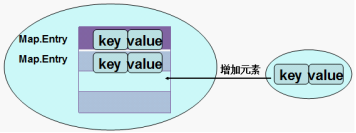

第10章 集合
主要内容
- List集合
- Set集合
- Map集合
学习目标
-
能够熟练使用Collection集合的API
-
能够使用Iterator迭代器遍历Collection系列的集合
-
能够使用foreach遍历Collection系列的集合
-
能够说出List集合和Set集合的区别
-
能够说出List集合各种实现类的区别
-
能够说出Set集合各种实现类的区别
-
能够说出Collection集合与Map集合的区别
-
掌握Map集合的常用API
-
能够遍历Map集合
-
能够说出Map集合各种实现类的区别
第十章 集合
集合是java中提供的一种容器，可以用来存储多个对象数据。
既然有数组作为数据容器，Java为什么还提供集合容器？它们有啥区别呢？
- 数组的长度是固定的，不利于数据的增删。集合的长度是可变的。
- 数组中提供的属性和方法较少，不便于进行常用的增删改查操作，集合提供了更丰富的API。
- 数组存储数据的特点单一，即有序的，可重复的。
- 数组中可以存储基本数据类型值，也可以存储对象，而集合中只能存储对象
集合主要分为两大系列：Collection和Map，Collection 表示一组对象，Map表示一组映射关系或键值对。

10.1 Collection
Collection 层次结构中的根接口。Collection 表示一组对象，这些对象也称为 collection 的元素。一些 collection 允许有重复的元素，而另一些则不允许。一些 collection 是有序的，而另一些则是无序的。JDK 不提供此接口的任何直接实现：它提供更具体的子接口（如 Set 和 List、Queue）实现。此接口通常用来传递 collection，并在需要最大普遍性的地方操作这些 collection。
Collection
1、添加元素
（1）add(E obj)：添加元素对象到当前集合中
（2）addAll(Collection<? extends E> other)：添加other集合中的所有元素对象到当前集合中，即this = this ∪ other
2、删除元素
（1） boolean remove(Object obj) ：从当前集合中删除第一个找到的与obj对象equals返回true的元素。
（2）boolean removeAll(Collection<?> coll)：从当前集合中删除所有与coll集合中相同的元素。即this = this - this ∩ coll
3、判断
（1）boolean isEmpty()：判断当前集合是否为空集合。
（2）boolean contains(Object obj)：判断当前集合中是否存在一个与obj对象equals返回true的元素。
（3）boolean containsAll(Collection<?> c)：判断c集合中的元素是否在当前集合中都存在。即c集合是否是当前集合的“子集”。
4、获取元素个数
（1）int size()：获取当前集合中实际存储的元素个数
5、交集
（1）boolean retainAll(Collection<?> coll)：当前集合仅保留与c集合中的元素相同的元素，即当前集合中仅保留两个集合的交集，即this = this ∩ coll；
6、转为数组
（1）Object[] toArray()：返回包含当前集合中所有元素的数组
方法演示：
ximport java.util.ArrayList;import java.util.Collection;public class Demo1Collection { public static void main(String[] args) { // 创建集合对象 // 使用多态形式 Collection<String> coll = new ArrayList<String>(); // 使用方法 // 添加功能 boolean add(String s) coll.add("小李广"); coll.add("扫地僧"); coll.add("石破天"); System.out.println(coll); // boolean contains(E e) 判断o是否在集合中存在 System.out.println("判断 扫地僧 是否在集合中"+coll.contains("扫地僧")); //boolean remove(E e) 删除在集合中的o元素 System.out.println("删除石破天："+coll.remove("石破天")); System.out.println("操作之后集合中元素:"+coll); // size() 集合中有几个元素 System.out.println("集合中有"+coll.size()+"个元素"); // Object[] toArray()转换成一个Object数组 Object[] objects = coll.toArray(); // 遍历数组 for (int i = 0; i < objects.length; i++) { System.out.println(objects[i]); } // void clear() 清空集合 coll.clear(); System.out.println("集合中内容为："+coll); // boolean isEmpty() 判断是否为空 System.out.println(coll.isEmpty()); }}
xxxxxxxxxx public void test2(){ Collection coll = new ArrayList(); coll.add(1); coll.add(2); System.out.println("coll集合元素的个数：" + coll.size()); Collection other = new ArrayList(); other.add(1); other.add(2); other.add(3); coll.addAll(other);// coll.add(other); System.out.println("coll集合元素的个数：" + coll.size()); }注意：coll.addAll(other);与coll.add(other);

xxxxxxxxxx public void test5(){ Collection coll = new ArrayList(); coll.add(1); coll.add(2); coll.add(3); coll.add(4); coll.add(5); System.out.println("coll集合元素的个数：" + coll.size());//5 Collection other = new ArrayList(); other.add(1); other.add(2); other.add(8); coll.retainAll(other);//保留交集 System.out.println("coll集合元素的个数：" + coll.size());//2 }练习：存储字符串或自定义对象，并遍历
10.2 Iterator迭代器
10.2.1 Iterator接口API
在程序开发中，经常需要遍历集合中的所有元素。针对这种需求，JDK专门提供了一个接口java.util.Iterator。Iterator接口也是Java集合中的一员，但它与Collection、Map接口有所不同，Collection接口与Map接口主要用于存储元素，而Iterator主要用于迭代访问（即遍历）Collection中的元素，因此Iterator对象也被称为迭代器。
想要遍历Collection集合，那么就要获取该集合迭代器完成迭代操作，下面介绍一下获取迭代器的方法：
public Iterator iterator(): 获取集合对应的迭代器，用来遍历集合中的元素的。
下面介绍一下迭代的概念：
- 迭代：即Collection集合元素的通用获取方式。在取元素之前先要判断集合中有没有元素，如果有，就把这个元素取出来，继续在判断，如果还有就再取出出来。一直把集合中的所有元素全部取出。这种取出方式专业术语称为迭代。
Iterator接口的常用方法如下：
public E next():返回迭代的下一个元素。public boolean hasNext():如果仍有元素可以迭代，则返回 true。public void remove():通过迭代器删除元素
接下来我们通过案例学习如何使用Iterator迭代集合中元素：
xxxxxxxxxxpublic class IteratorDemo { public static void main(String[] args) { // 使用多态方式 创建对象 Collection<String> coll = new ArrayList<String>(); // 添加元素到集合 coll.add("串串星人"); coll.add("吐槽星人"); coll.add("汪星人"); //遍历 //使用迭代器 遍历 每个集合对象都有自己的迭代器 Iterator<String> it = coll.iterator(); // 泛型指的是 迭代出 元素的数据类型 while(it.hasNext()){ //判断是否有迭代元素 String s = it.next();//获取迭代出的元素 System.out.println(s); } }}tips:：在进行集合元素取出时，如果集合中已经没有元素了，还继续使用迭代器的next方法，将会发生java.util.NoSuchElementException没有集合元素的错误。
10.2.2 迭代器的实现原理
我们在之前案例已经完成了Iterator遍历集合的整个过程。当遍历集合时，首先通过调用集合的iterator()方法获得迭代器对象，然后使用hashNext()方法判断集合中是否存在下一个元素，如果存在，则调用next()方法将元素取出，否则说明已到达了集合末尾，停止遍历元素。
Iterator迭代器对象在遍历集合时，内部采用指针的方式来跟踪集合中的元素，为了让初学者能更好地理解迭代器的工作原理，接下来通过一个图例来演示Iterator对象迭代元素的过程：
在调用Iterator的next方法之前，迭代器的索引位于第一个元素之前，指向第一个元素，当第一次调用迭代器的next方法时，返回第一个元素，然后迭代器的索引会向后移动一位，指向第二个元素，当再次调用next方法时，返回第二个元素，然后迭代器的索引会再向后移动一位，指向第三个元素，依此类推，直到hasNext方法返回false，表示到达了集合的末尾，终止对元素的遍历。
10.2.3 增强for与Iterable接口
增强for循环(也称foreach循环)是JDK1.5以后出来的一个高级for循环，专门用来遍历数组和集合的。
格式：
xxxxxxxxxxfor(元素的数据类型 变量 : Collection集合or数组){ //写操作代码}增强for应用示例
遍历数组
通常只进行遍历元素，不要在遍历的过程中对数组元素进行修改。
xxxxxxxxxxpublic class NBForDemo1 {public static void main(String[] args) {int[] arr = {3,5,6,87};//使用增强for遍历数组for(int a : arr){//a代表数组中的每个元素System.out.println(a);}}}练习2：遍历集合
通常只进行遍历元素，不要在遍历的过程中对集合元素进行增加、删除、替换操作。
xxxxxxxxxxpublic class NBFor {public static void main(String[] args) {Collection<String> coll = new ArrayList<String>();coll.add("小河神");coll.add("老河神");coll.add("神婆");//使用增强for遍历for(String s :coll){//接收变量s代表 代表被遍历到的集合元素System.out.println(s);}}}
java.lang.Iterable接口
实现这个接口允许对象成为 "foreach" 语句的目标。
Java 5时Collection接口继承了Iterable接口，因此Collection系列的集合就可以直接使用foreach循环遍历。
Iterable接口的抽象方法：
- public Iterator iterator(): 获取对应的迭代器，用来遍历数组或集合中的元素的。
自定义某容器类型，实现java.lang.Iterable接口，发现就可以使用foreach进行迭代。
xxxxxxxxxximport java.util.Iterator;public class TestMyArrayList {public static void main(String[] args) {MyArrayList<String> my = new MyArrayList<>();for(String obj : my) {System.out.println(obj);}}}class MyArrayList<T> implements Iterable<T>{public Iterator<T> iterator() {return null;}}foreach本质上就是使用Iterator迭代器进行遍历的
（反编译源码或debug调试可以证实，遍历数组本质是普通for循环）
我们在如下代码的for(Student student : coll)这行打断点，然后使用单步调试进入源码，发现foreach本质上是调用集合的iterator()方法，返回一个迭代器进行迭代的
import java.util.ArrayList; import java.util.Collection; public class TestForeach { public static void main(String[] args) { Collection<String> coll = new ArrayList<>(); coll.add("陈琦"); coll.add("李晨"); coll.add("邓超"); coll.add("黄晓明"); //调用ArrayList里面的Iterator iterator() for (String str : coll) { System.out.println(str); } } }
所以也不要在foreach遍历的过程使用Collection的remove()方法。否则，要么报异常java.util.ConcurrentModificationException，要么行为不确定。
10.2.4 modCount与fail-fast机制
当使用foreach或Iterator迭代器遍历集合时，同时调用迭代器自身以外的方法修改了集合的结构，例如调用集合的add和remove方法时，就会报ConcurrentModificationException。
import java.util.ArrayList;
import java.util.Collection;
import java.util.Iterator;
public class TestForeach {
public static void main(String[] args) {
Collection<String> list = new ArrayList<>();
list.add("hello");
list.add("java");
list.add("atguigu");
list.add("world");
Iterator<String> iterator = list.iterator();
while(iterator.hasNext()){
list.remove(iterator.next());
}
}
}
如果在Iterator、ListIterator迭代器创建后的任意时间从结构上修改了集合（通过迭代器自身的 remove 或 add 方法之外的任何其他方式），则迭代器将抛出 ConcurrentModificationException。因此，面对并发的修改，迭代器很快就完全失败，而不是冒着在将来不确定的时间任意发生不确定行为的风险。
这样设计是因为，迭代器代表集合中某个元素的位置，内部会存储某些能够代表该位置的信息。当集合发生改变时，该信息的含义可能会发生变化，这时操作迭代器就可能会造成不可预料的事情。因此，果断抛异常阻止，是最好的方法。这就是Iterator迭代器的快速失败（fail-fast）机制。
注意，迭代器的快速失败行为不能得到保证，一般来说，存在不同步的并发修改时，不可能作出任何坚决的保证。快速失败迭代器尽最大努力抛出 ConcurrentModificationException。因此，编写依赖于此异常的程序的方式是错误的，正确做法是：迭代器的快速失败行为应该仅用于检测
bug。例如：
@Test
public void test02() {
ArrayList<String> list = new ArrayList<>();
list.add("hello");
list.add("java");
list.add("atguigu");
list.add("world");
//以下代码没有发生ConcurrentModificationException异常
Iterator<String> iterator = list.iterator();
while(iterator.hasNext()){
String str = iterator.next();
if("atguigu".equals(str)){
list.remove(str);
}
}
}
那么如何实现快速失败（fail-fast）机制的呢？
- 在ArrayList等集合类中都有一个modCount变量。它用来记录集合的结构被修改的次数。
- 当我们给集合添加和删除操作时，会导致modCount++。
- 然后当我们用Iterator迭代器遍历集合时，创建集合迭代器的对象时，用一个变量记录当前集合的modCount。例如：
int expectedModCount = modCount;，并且在迭代器每次next()迭代元素时，都要检查expectedModCount != modCount，如果不相等了，那么说明你调用了Iterator迭代器以外的Collection的add,remove等方法，修改了集合的结构，使得modCount++，值变了，就会抛出ConcurrentModificationException。
下面以AbstractList
AbstractList
/**
* The number of times this list has been <i>structurally modified</i>.
* Structural modifications are those that change the size of the
* list, or otherwise perturb it in such a fashion that iterations in
* progress may yield incorrect results.
*
* <p>This field is used by the iterator and list iterator implementation
* returned by the {@code iterator} and {@code listIterator} methods.
* If the value of this field changes unexpectedly, the iterator (or list
* iterator) will throw a {@code ConcurrentModificationException} in
* response to the {@code next}, {@code remove}, {@code previous},
* {@code set} or {@code add} operations. This provides
* <i>fail-fast</i> behavior, rather than non-deterministic behavior in
* the face of concurrent modification during iteration.
*
* <p><b>Use of this field by subclasses is optional.</b> If a subclass
* wishes to provide fail-fast iterators (and list iterators), then it
* merely has to increment this field in its {@code add(int, E)} and
* {@code remove(int)} methods (and any other methods that it overrides
* that result in structural modifications to the list). A single call to
* {@code add(int, E)} or {@code remove(int)} must add no more than
* one to this field, or the iterators (and list iterators) will throw
* bogus {@code ConcurrentModificationExceptions}. If an implementation
* does not wish to provide fail-fast iterators, this field may be
* ignored.
*/
protected transient int modCount = 0;
modCount是这个list被结构性修改的次数。结构性修改是指：改变list的size大小，或者，以其他方式改变他导致正在进行迭代时出现错误的结果。
这个字段用于迭代器和列表迭代器的实现类中，由迭代器和列表迭代器方法返回。如果这个值被意外改变，这个迭代器将会抛出 ConcurrentModificationException的异常来响应：next,remove,previous,set,add 这些操作。在迭代过程中，他提供了fail-fast行为而不是不确定行为来处理并发修改。
子类使用这个字段是可选的，如果子类希望提供fail-fast迭代器，它仅仅需要在add(int, E),remove(int)方法（或者它重写的其他任何会结构性修改这个列表的方法）中添加这个字段。调用一次add(int,E)或者remove(int)方法时必须且仅仅给这个字段加1，否则迭代器会抛出伪装的ConcurrentModificationExceptions错误。如果一个实现类不希望提供fail-fast迭代器，则可以忽略这个字段。
Arraylist的Itr迭代器：
private class Itr implements Iterator<E> {
int cursor;
int lastRet = -1;
int expectedModCount = modCount;//在创建迭代器时，expectedModCount初始化为当前集合的modCount的值
public boolean hasNext() {
return cursor != size;
}
@SuppressWarnings("unchecked")
public E next() {
checkForComodification();//校验expectedModCount与modCount是否相等
int i = cursor;
if (i >= size)
throw new NoSuchElementException();
Object[] elementData = ArrayList.this.elementData;
if (i >= elementData.length)
throw new ConcurrentModificationException();
cursor = i + 1;
return (E) elementData[lastRet = i];
}
final void checkForComodification() {
if (modCount != expectedModCount)//校验expectedModCount与modCount是否相等
throw new ConcurrentModificationException();//不相等，抛异常
}
}
练习
练习1
- 添加100以内的质数到Collection的某个集合中
- 使用foreach遍历
- 使用Iterator遍历，并删除个位数是3个质数
- 删除11
- 查看最后剩下几个元素
- 添加10个100以内的随机整数到另一个Collection的集合中
- 求它们的交集
练习2
声明学员类型Student，包含属性：姓名，成绩
添加本组学员Student对象到Collection的某个集合中
- 使用foreach遍历
- 使用Iterator遍历，并删除成绩低于60分的
10.3 List集合
我们掌握了Collection接口的使用后，再来看看Collection接口中的子接口，他们都具备那些特性呢？
10.3.1 List接口介绍
java.util.List接口继承自Collection接口，是单列集合的一个重要分支，习惯性地会将实现了List接口的对象称为List集合。
List接口特点：
- List集合所有的元素是以一种线性方式进行存储的，例如，存元素的顺序是11、22、33。那么集合中，元素的存储就是按照11、22、33的顺序完成的）
- 它是一个元素存取有序的集合。即元素的存入顺序和取出顺序有保证。
- 它是一个带有索引的集合，通过索引就可以精确的操作集合中的元素（与数组的索引是一个道理）。
- 集合中可以有重复的元素，通过元素的equals方法，来比较是否为重复的元素。
List集合类中元素有序、且可重复。这就像银行门口客服，给每一个来办理业务的客户分配序号：第一个来的是“张三”，客服给他分配的是0；第二个来的是“李四”，客服给他分配的1；以此类推，最后一个序号应该是“总人数-1”。

注意：
List集合关心元素是否有序，而不关心是否重复，请大家记住这个原则。例如“张三”可以领取两个号。
10.3.2 List接口中常用方法
List作为Collection集合的子接口，不但继承了Collection接口中的全部方法，而且还增加了一些根据元素索引来操作集合的特有方法，如下：
List除了从Collection集合继承的方法外，List 集合里添加了一些根据索引来操作集合元素的方法。
1、添加元素
- void add(int index, E ele)
- boolean addAll(int index, Collection<? extends E> eles)
2、获取元素
- E get(int index)
- List subList(int fromIndex, int toIndex)
3、获取元素索引
- int indexOf(Object obj)
- int lastIndexOf(Object obj)
4、删除和替换元素
- E remove(int index)
- E set(int index, E ele)
List集合特有的方法都是跟索引相关：
public class ListDemo {
public static void main(String[] args) {
// 创建List集合对象
List<String> list = new ArrayList<String>();
// 往 尾部添加 指定元素
list.add("图图");
list.add("小美");
list.add("不高兴");
System.out.println(list);
// add(int index,String s) 往指定位置添加
list.add(1,"没头脑");
System.out.println(list);
// String remove(int index) 删除指定位置元素 返回被删除元素
// 删除索引位置为2的元素
System.out.println("删除索引位置为2的元素");
System.out.println(list.remove(2));
System.out.println(list);
// String set(int index,String s)
// 在指定位置 进行 元素替代（改）
// 修改指定位置元素
list.set(0, "三毛");
System.out.println(list);
// String get(int index) 获取指定位置元素
// 跟size() 方法一起用 来 遍历的
for(int i = 0;i<list.size();i++){
System.out.println(list.get(i));
}
//还可以使用增强for
for (String string : list) {
System.out.println(string);
}
}
}
在JavaSE中List名称的类型有两个，一个是java.util.List集合接口，一个是java.awt.List图形界面的组件，别导错包了。
10.3.3 ArrayList实现类
ArrayList是List接口的典型实现类，底层使用长度可变的数组实现，常用方法都来自Collection和List接口。
ArrayList因为底层使用了数组存储数据，所以具有查询快，增、删慢的特点。
数据结构就是研究数据的逻辑结构和物理结构以及它们之间相互关系，并对这种结构定义相应的运算，而且确保经过这些运算后所得到的新结构仍然是原来的结构类型。


比较Vector类底层也使用数组，但是线程安全，效率低，不推荐使用。
练习：存储自定义对象，并遍历（普通for，增强for，迭代器）。
ArrayList源码分析：
ArrayList底层实现：可变长的数组，有索引，查询效率高，增删效率低
构造方法：
new ArrayList（）：
jdk6中，空参构造直接创建10长度的数组
jdk7(新版)jdk8中，默认初始容量0，在添加第一元素时初始化容量为10
new ArrayList(int initialCapacity):
指定初始化容量
添加元素：add(E e);
首次添加元素，初始化容量为10
每次添加修改modCount属性值
每次添加检查容量是否足够，容量不足时需要扩容，扩容大小为原容量的1.5倍
移除元素：remove(E e);
每次成功移除元素，修改modCount值
每次成功移除需要需要移动元素，以保证所以元素是连续存储的（删除操作效率低的原因）
Arrays工具类的asList方法得到List集合特点：不可变集合。查看源码
List Arrays.asList(T...a):返回一个固定长度的List。
泛型初体验：
10.3.4 LinkedList实现类
LinkedList是List接口的另一个常用实现类。
LinkedList底层存储数据使用链表结构(双向链表)，特点：增删快，查询慢。
LinkedList底层结构：

源码中节点使用Node对象表示一个完整的元素节点：
private static class Node<E> {
E item;//数据元素
Node<E> next;//下一个元素节点
Node<E> prev;//上一个元素节点
Node(Node<E> prev, E element, Node<E> next) {
this.item = element;
this.next = next;
this.prev = prev;
}
}
LinkedList特有的方法（首、尾元素的操作）:
- void addFirst(Object obj )
- void addLast(Object obj )
- Object getFirst()
- Object getLast()
- Object removeFirst()
- Object removeLast ()
LinkedList源码分析：
LinkedList也实现了Deque接口（双端队列），此接口提供了实现队列和栈结构的方法。
队列：是一种抽象的数据结构，数据存取特点为先进先出（FIFO），LinkedList中的队列方法：
- boolean offer(Object obj) : 入队
- Object poll() : 出队
- Object peek() : 检查
栈：是一种抽象的数据结构，数据存取特点为后进先出（LIFO），LinkedList中的栈方法：
- void push(E e) ：压栈
- E pop() ：弹栈
Stack实现类实现的也是栈结构，他是Vector的子类，所以它是使用数组实现的栈结构。
练习：存储元素并遍历
10.3.4 ListIterator（了解）
List 集合额外提供了一个 listIterator() 方法，该方法返回一个 ListIterator 对象， ListIterator 接口继承了 Iterator 接口，提供了专门操作 List 的方法：
- void add()：通过迭代器添加元素到对应集合
- void set(Object obj)：通过迭代器替换正迭代的元素
- void remove()：通过迭代器删除刚迭代的元素
- boolean hasPrevious()：如果以逆向遍历列表，往前是否还有元素。
- Object previous()：返回列表中的前一个元素。
- int previousIndex()：返回列表中的前一个元素的索引
- boolean hasNext()
- Object next()
- int nextIndex()
public static void main(String[] args) {
List<Student> c = new ArrayList<>();
c.add(new Student(1,"张三"));
c.add(new Student(2,"李四"));
c.add(new Student(3,"王五"));
c.add(new Student(4,"赵六"));
c.add(new Student(5,"钱七"));
//从指定位置往前遍历
ListIterator<Student> listIterator = c.listIterator(c.size());
while(listIterator.hasPrevious()){
Student previous = listIterator.previous();
System.out.println(previous);
}
}
10.4 Set集合
Set接口是Collection的子接口，set接口没有提供额外的方法。但是比Collection接口更加严格了。
Set 集合不允许包含相同的元素，即元素唯一。
Set集合支持的遍历方式和Collection集合一样：foreach和Iterator。
Set的常用实现类有：HashSet、TreeSet、LinkedHashSet。
10.6.1 HashSet
HashSet 是 Set 接口的典型实现，大多数时候使用 Set 集合时都使用这个实现类。
java.util.HashSet底层的实现其实是一个java.util.HashMap支持，然后HashMap的底层物理实现是一个Hash表。
HashSet 按 Hash 算法来存储集合中的元素，因此具有很好的存取和查找性能。

HashSet 集合判断两个元素相等的标准：1.两个对象通过 hashCode() 方法比较相等，2.并且两个对象的 equals() 方法返回值也相等。因此，存储到HashSet的元素要重写hashCode和equals方法。
示例代码：定义一个Employee类，该类包含属性：name, birthday，其中 birthday 为 MyDate类的对象；MyDate为自定义类型，包含年、月、日属性。要求 name和birthday一样的视为同一个员工。
public class Employee {
private String name;
private MyDate birthday;
public Employee(String name, MyDate birthday) {
super();
this.name = name;
this.birthday = birthday;
}
public Employee() {
super();
}
public String getName() {
return name;
}
public void setName(String name) {
this.name = name;
}
public MyDate getBirthday() {
return birthday;
}
public void setBirthday(MyDate birthday) {
this.birthday = birthday;
}
@Override
public int hashCode() {
final int prime = 31;
int result = 1;
result = prime * result + ((birthday == null) ? 0 : birthday.hashCode());
result = prime * result + ((name == null) ? 0 : name.hashCode());
return result;
}
@Override
public boolean equals(Object obj) {
if (this == obj)
return true;
if (obj == null)
return false;
if (getClass() != obj.getClass())
return false;
Employee other = (Employee) obj;
if (birthday == null) {
if (other.birthday != null)
return false;
} else if (!birthday.equals(other.birthday))
return false;
if (name == null) {
if (other.name != null)
return false;
} else if (!name.equals(other.name))
return false;
return true;
}
@Override
public String toString() {
return "姓名：" + name + ", 生日：" + birthday;
}
}
public class MyDate {
private int year;
private int month;
private int day;
public MyDate(int year, int month, int day) {
super();
this.year = year;
this.month = month;
this.day = day;
}
public MyDate() {
super();
}
public int getYear() {
return year;
}
public void setYear(int year) {
this.year = year;
}
public int getMonth() {
return month;
}
public void setMonth(int month) {
this.month = month;
}
public int getDay() {
return day;
}
public void setDay(int day) {
this.day = day;
}
@Override
public int hashCode() {
final int prime = 31;
int result = 1;
result = prime * result + day;
result = prime * result + month;
result = prime * result + year;
return result;
}
@Override
public boolean equals(Object obj) {
if (this == obj)
return true;
if (obj == null)
return false;
if (getClass() != obj.getClass())
return false;
MyDate other = (MyDate) obj;
if (day != other.day)
return false;
if (month != other.month)
return false;
if (year != other.year)
return false;
return true;
}
@Override
public String toString() {
return year + "-" + month + "-" + day;
}
}
import java.util.HashSet;
public class TestHashSet {
@SuppressWarnings("all")
public static void main(String[] args) {
HashSet<Employee> set = new HashSet<>();
set.add(new Employee("张三", new MyDate(1990,1,1)));
//重复元素无法添加，因为MyDate和Employee重写了hashCode和equals方法
set.add(new Employee("张三", new MyDate(1990,1,1)));
set.add(new Employee("李四", new MyDate(1992,2,2)));
for (Employee object : set) {
System.out.println(object);
}
}
}
10.6.2 LinkedHashSet
LinkedHashSet是HashSet的子类，它在HashSet的基础上，在结点中增加两个属性before和after维护了结点的前后添加顺序。java.util.LinkedHashSet，它是链表和哈希表组合的一个数据存储结构。LinkedHashSet插入性能略低于
HashSet，但在迭代访问 Set 里的全部元素时有很好的性能。

LinkedHashSet<String> set = new LinkedHashSet<>();
set.add("张三");
set.add("李四");
set.add("王五");
set.add("张三");
System.out.println("元素个数：" + set.size());
for (String name : set) {
System.out.println(name);
}
运行结果： 元素个数：3 张三 李四 王五
10.6.2 TreeSet
底层结构：里面维护了一个TreeMap，都是基于红黑树实现的。
红黑树是一种平衡二叉树，查询效率高于链表。
二叉树的遍历：
- 前序遍历：中左右
- 中序遍历：左中右
- 后序遍历：左右中

TreeSet特点：
- 元素唯一
- 实现排序（取出的元素是经过排序的）。
如何实现去重的？如何排序？
如果TreeSet中的元素要实现元素唯一和排序，那么这些元素就必须是可以进行比较的，如何保证元素可比较呢？要么元素本身实现Comparable接口，从而实现可比较；要么给TreeSet容器传入一个实现了Comparator接口的比较器，使其可以对存入的元素进行比
Java提供的核心类很多都实现了Comparable接口比如常见的String类，包装类，日期类等 BigDecimal、BigInteger 以及所有的数值型对应的包装类：按它们对应的数值大小进行比较 Character：按字符的 unicode值来进行比较 Boolean：true 对应的包装类实例大于 false 对应的包装类实例 String：从第一个字符开始，比较每一个字符，如果字符都相同再比较长度。 Date、Time：比较毫秒值，后边的时间、日期比前面的时间、日期大
元素实现Comparable接口
如果试图把一个对象添加到 TreeSet 时，则该对象的类必须实现 Comparable 接口。实现 Comparable 的类必须实现 compareTo(Object obj) 方法，两个对象即通过 compareTo(Object obj) 方法的返回值来比较大小。对于 TreeSet 集合而言，它判断两个对象是否相等的唯一标准是：两个对象通过 compareTo(Object obj) 方法比较返回值为0。
代码示例一：按照字符串Unicode编码值排序
@Test
public void test1(){
TreeSet<String> set = new TreeSet<>();
set.add("zhangsan"); //String它实现了java.lang.Comparable接口
set.add("lisi");
set.add("wangwu");
set.add("zhangsan");
System.out.println("元素个数：" + set.size());
for (String str : set) {
System.out.println(str);
}
}
TreeSet传入实现Comparator实现类
如果放到TreeSet中的元素的自然排序（Comparable）规则不符合当前排序需求时，或者元素的类型没有实现Comparable接口。那么在创建TreeSet时，可以单独指定一个Comparator的对象。使用定制排序判断两个元素相等的标准是：通过Comparator比较两个元素返回了0。
代码示例：学生类型未实现Comparable接口，单独指定Comparator比较器，按照学生的学号排序
public class Student{
private int id;
private String name;
public Student(int id, String name) {
super();
this.id = id;
this.name = name;
}
public int getId() {
return id;
}
public void setId(int id) {
this.id = id;
}
//......这里省略了name属性的get/set
@Override
public String toString() {
return "Student [id=" + id + ", name=" + name + "]";
}
}
@Test
public void test3(){
TreeSet<Student> set = new TreeSet(new Comparator<Student>(){
@Override
public int compare(Student o1, Student o2) {
return o1.getId() - o2.getId();
}
});
set.add(new Student(3,"张三"));
set.add(new Student(1,"李四"));
set.add(new Student(2,"王五"));
set.add(new Student(3,"张三风"));
System.out.println("元素个数：" + set.size());
for (Student stu : set) {
System.out.println(stu);
}
}
TreeSet存取元素规则：
TreeSet存储元素时根据当前加入元素与已有元素比较的结果决定元素加入的位置，结果为负数，元素放左边，结果为正数，元素放右边，结果为0，则覆盖原值。
取元素时，采用中序遍历方式，即左中右顺序取出二叉树中元素。
10.5 Collection系列的集合小结
Collection：集合根接口，存储一组对象。
List：接口，特点是，元素可重复，有序（存取顺序一致）
- ArrayList：底层结构为数组，查询快，增删慢，线程不安全
- LinkedList：底层结构为链表，查询慢，增删快
- Vector：底层结构为数组，线程安全，效率低，不推荐使用
Set：接口，特点是，元素唯一
- HashSet：底层结构为Hash表，查询和增删效率都高
- TreeSet：底层结构为红黑树，查询效率高于链表，增删效率高于数组，元素实现排序
- LinkedHashSet：底层结构为hash表+链表，链表保证元素的有序
10.6 Map
10.6.1 概述
现实生活中，我们常会看到这样的一种集合：IP地址与主机名，身份证号与个人，系统用户名与系统用户对象等，这种一一对应的关系，就叫做映射。Java提供了专门的集合类用来存放这种对象关系的对象，即java.util.Map<K,V>接口。
我们通过查看Map接口描述，发现Map<K,V>接口下的集合与Collection<E>接口下的集合，它们存储数据的形式不同。
Collection中的集合，元素是孤立存在的（理解为单身），向集合中存储元素采用一个个元素的方式存储。Map中的集合，元素是成对存在的(理解为夫妻)。每个元素由键与值两部分组成，通过键可以找对所对应的值。Collection中的集合称为单列集合，Map中的集合称为双列集合。- 需要注意的是，
Map中的集合不能包含重复的键，值可以重复；每个键只能对应一个值（这个值可以是单个值，也可以是个数组或集合值）。

10.6.2 Map常用方法
1、添加操作
- V put(K key,V value)
- void putAll(Map<? extends K,? extends V> m)
2、删除
- void clear()
- V remove(Object key)
3、元素查询的操作
- V get(Object key)
- boolean containsKey(Object key)
- boolean containsValue(Object value)
- boolean isEmpty()
4、元视图操作的方法：
- Set
keySet() - Collection
values() - Set<Map.Entry<K,V>> entrySet()
5、其他方法
- int size()
public class MapDemo {
public static void main(String[] args) {
//创建 map对象
HashMap<String, String> map = new HashMap<String, String>();
//添加元素到集合
map.put("黄晓明", "杨颖");
map.put("文章", "马伊琍");
map.put("邓超", "孙俪");
System.out.println(map);
//String remove(String key)
System.out.println(map.remove("邓超"));
System.out.println(map);
// 想要查看 黄晓明的媳妇 是谁
System.out.println(map.get("黄晓明"));
System.out.println(map.get("邓超"));
}
}
tips:
使用put方法时，若指定的键(key)在集合中没有，则没有这个键对应的值，返回null，并把指定的键值添加到集合中；
若指定的键(key)在集合中存在，则返回值为集合中键对应的值（该值为替换前的值），并把指定键所对应的值，替换成指定的新值。
10.6.3 Map集合的遍历
Collection集合的遍历：（1）foreach（2）通过Iterator对象遍历
Map的遍历，不能支持foreach，因为Map接口没有继承java.lang.Iterable
（1）分开遍历：
- 单独遍历所有key
- 单独遍历所有value
（2）成对遍历：
- 遍历的是映射关系Map.Entry类型的对象，Map.Entry是Map接口的内部接口。每一种Map内部有自己的Map.Entry的实现类。在Map中存储数据，实际上是将Key---->value的数据存储在Map.Entry接口的实例中，再在Map集合中插入Map.Entry的实例化对象，如图示：

public class TestMap {
public static void main(String[] args) {
HashMap<String,String> map = new HashMap<>();
map.put("许仙", "白娘子");
map.put("董永", "七仙女");
map.put("牛郎", "织女");
map.put("许仙", "小青");
System.out.println("所有的key:");
Set<String> keySet = map.keySet();
for (String key : keySet) {
System.out.println(key);
}
System.out.println("所有的value：");
Collection<String> values = map.values();
for (String value : values) {
System.out.println(value);
}
System.out.println("所有的映射关系");
Set<Map.Entry<String,String>> entrySet = map.entrySet();
for (Map.Entry<String,String> entry : entrySet) {
// System.out.println(entry);
System.out.println(entry.getKey()+"->"+entry.getValue());
}
}
}
10.6.4 Map的实现类们
Map接口的常用实现类：HashMap、TreeMap、LinkedHashMap和Properties。其中HashMap是 Map 接口使用频率最高的实现类。
1、HashMap和Hashtable的区别与联系
- HashMap和Hashtable都是哈希表。
- HashMap和Hashtable判断两个 key 相等的标准是：两个 key 的hashCode 值相等，并且 equals() 方法也返回 true。因此，为了成功地在哈希表中存储和获取对象，用作键的对象必须实现 hashCode 方法和 equals 方法。
- Hashtable是线程安全的，任何非 null 对象都可以用作键或值。
- HashMap是线程不安全的，并允许使用 null 值和 null 键。
HashMap构造方法：
- HashMap();
- HashMap(int initialCapacity);//指定初始化容量
示例代码：添加员工姓名为key，薪资为value
public static void main(String[] args) {
HashMap<String,Double> map = new HashMap<>();
map.put("张三", 10000.0);
//key相同，新的value会覆盖原来的value
//因为String重写了hashCode和equals方法
map.put("张三", 12000.0);
map.put("李四", 14000.0);
//HashMap支持key和value为null值
String name = null;
Double salary = null;
map.put(name, salary);
Set<Entry<String, Double>> entrySet = map.entrySet();
for (Entry<String, Double> entry : entrySet) {
System.out.println(entry);
}
}
2、LinkedHashMap
LinkedHashMap 是 HashMap 的子类。此实现与 HashMap 的不同之处在于，后者维护着一个运行于所有条目的双重链接列表。此链接列表定义了迭代顺序，该迭代顺序通常就是将键插入到映射中的顺序（插入顺序）。
示例代码：添加员工姓名为key，薪资为value
public static void main(String[] args) {
LinkedHashMap<String,Double> map = new LinkedHashMap<>();
map.put("张三", 10000.0);
//key相同，新的value会覆盖原来的value
//因为String重写了hashCode和equals方法
map.put("张三", 12000.0);
map.put("李四", 14000.0);
//HashMap支持key和value为null值
String name = null;
Double salary = null;
map.put(name, salary);
Set<Entry<String, Double>> entrySet = map.entrySet();
for (Entry<String, Double> entry : entrySet) {
System.out.println(entry);
}
}
3、TreeMap
基于红黑树（Red-Black tree）的 NavigableMap 实现。该映射根据其键的自然顺序进行排序，或者根据创建映射时提供的 Comparator 进行排序，具体取决于使用的构造方法。
代码示例：添加员工姓名为key，薪资为value
package com.atguigu.map;
import java.util.Comparator;
import java.util.Map.Entry;
import java.util.Set;
import java.util.TreeMap;
import org.junit.Test;
public class TestTreeMap {
@Test
public void test1() {
TreeMap<String,Integer> map = new TreeMap<>();
map.put("Jack", 11000);
map.put("Alice", 12000);
map.put("zhangsan", 13000);
map.put("baitao", 14000);
map.put("Lucy", 15000);
//String实现了Comparable接口，默认按照Unicode编码值排序
Set<Entry<String, Integer>> entrySet = map.entrySet();
for (Entry<String, Integer> entry : entrySet) {
System.out.println(entry);
}
}
@Test
public void test2() {
//指定定制比较器Comparator，按照Unicode编码值排序，但是忽略大小写
TreeMap<String,Integer> map = new TreeMap<>(new Comparator<String>() {
@Override
public int compare(String o1, String o2) {
return o1.compareToIgnoreCase(o2);
}
});
map.put("Jack", 11000);
map.put("Alice", 12000);
map.put("zhangsan", 13000);
map.put("baitao", 14000);
map.put("Lucy", 15000);
Set<Entry<String, Integer>> entrySet = map.entrySet();
for (Entry<String, Integer> entry : entrySet) {
System.out.println(entry);
}
}
}
4、Properties
Properties 类是 Hashtable 的子类，Properties 可保存在流中或从流中加载。属性列表中每个键及其对应值都是一个字符串。
存取数据时，建议使用setProperty(String key,String value)方法和getProperty(String key)方法。
代码示例：
public static void main(String[] args) {
Properties properties = System.getProperties();
String p2 = properties.getProperty("file.encoding");//当前源文件字符编码
System.out.println(p2);
}
10.6.5 Set集合与Map集合的关系
Set的内部实现其实是一个Map。即HashSet的内部实现是一个HashMap，TreeSet的内部实现是一个TreeMap，LinkedHashSet的内部实现是一个LinkedHashMap。
部分源代码摘要：
HashSet源码：
public HashSet() {
map = new HashMap<>();
}
public HashSet(Collection<? extends E> c) {
map = new HashMap<>(Math.max((int) (c.size()/.75f) + 1, 16));
addAll(c);
}
public HashSet(int initialCapacity, float loadFactor) {
map = new HashMap<>(initialCapacity, loadFactor);
}
public HashSet(int initialCapacity) {
map = new HashMap<>(initialCapacity);
}
//这个构造器是给子类LinkedHashSet调用的
HashSet(int initialCapacity, float loadFactor, boolean dummy) {
map = new LinkedHashMap<>(initialCapacity, loadFactor);
}
LinkedHashSet源码：
public LinkedHashSet(int initialCapacity, float loadFactor) {
super(initialCapacity, loadFactor, true);//调用HashSet的某个构造器
}
public LinkedHashSet(int initialCapacity) {
super(initialCapacity, .75f, true);//调用HashSet的某个构造器
}
public LinkedHashSet() {
super(16, .75f, true);
}
public LinkedHashSet(Collection<? extends E> c) {
super(Math.max(2*c.size(), 11), .75f, true);//调用HashSet的某个构造器
addAll(c);
}
TreeSet源码：
public TreeSet() {
this(new TreeMap<E,Object>());
}
public TreeSet(Comparator<? super E> comparator) {
this(new TreeMap<>(comparator));
}
public TreeSet(Collection<? extends E> c) {
this();
addAll(c);
}
public TreeSet(SortedSet<E> s) {
this(s.comparator());
addAll(s);
}
但是，咱们存到Set中只有一个元素，又是怎么变成(key,value)的呢？
以HashSet中的源码为例：
private static final Object PRESENT = new Object();
public boolean add(E e) {
return map.put(e, PRESENT)==null;
}
public Iterator<E> iterator() {
return map.keySet().iterator();
}
原来是，把添加到Set中的元素作为内部实现map的key，然后用一个常量对象PRESENT对象，作为value。
这是因为Set的元素不可重复和Map的key不可重复有相同特点。Map有一个方法keySet()可以返回所有key。
10.6.6 hash表详细结构与HashMap源码分析

10.7 集合框架
10.8 Collections工具类
参考操作数组的工具类：Arrays。
Collections 是一个操作 Set、List 和 Map 等集合的工具类。Collections 中提供了一系列静态的方法对集合元素进行排序、查询和修改等操作，还提供了对集合对象设置不可变、对集合对象实现同步控制等方法：
- public static
boolean addAll(Collection<? super T> c,T... elements)将所有指定元素添加到指定 collection 中。 - public static
int binarySearch(List<? extends Comparable<? super T>> list,T key)在List集合中查找某个元素的下标，但是List的元素必须是T或T的子类对象，而且必须是可比较大小的，即支持自然排序的。而且集合也事先必须是有序的，否则结果不确定。 - public static
int binarySearch(List<? extends T> list,T key,Comparator<? super T> c)在List集合中查找某个元素的下标，但是List的元素必须是T或T的子类对象，而且集合也事先必须是按照c比较器规则进行排序过的，否则结果不确定。 - public static <T extends Object & Comparable<? super T>> T max(Collection<? extends T> coll)在coll集合中找出最大的元素，集合中的对象必须是T或T的子类对象，而且支持自然排序
- public static
T max(Collection<? extends T> coll,Comparator<? super T> comp)在coll集合中找出最大的元素，集合中的对象必须是T或T的子类对象，按照比较器comp找出最大者 - public static void reverse(List<?> list)反转指定列表List中元素的顺序。
- public static void shuffle(List<?> list) List 集合元素进行随机排序，类似洗牌
- public static <T extends Comparable<? super T>> void sort(List
list)根据元素的自然顺序对指定 List 集合元素按升序排序 - public static
void sort(List list,Comparator<? super T> c)根据指定的 Comparator 产生的顺序对 List 集合元素进行排序 - public static void swap(List<?> list,int i,int j)将指定 list 集合中的 i 处元素和 j 处元素进行交换
- public static int frequency(Collection<?> c,Object o)返回指定集合中指定元素的出现次数
- public static
void copy(List<? super T> dest,List<? extends T> src)将src中的内容复制到dest中 - public static
boolean replaceAll(List list，T oldVal，T newVal)：使用新值替换 List 对象的所有旧值 - Collections 类中提供了多个 synchronizedXxx() 方法，该方法可使将指定集合包装成线程同步的集合，从而可以解决多线程并发访问集合时的线程安全问题
- Collections类中提供了多个unmodifiableXxx()方法，该方法返回指定 Xxx的不可修改的视图。
集合练习
练习1
随机产生10个100以内的偶数，存放到一个List中，并且遍历显示它们
练习2
随机产生10个100以内的偶数，存放到一个Set中，并且遍历显示它们
练习3
随机产生几个100以内的偶数，存放到一个Set中，并且遍历显示它们，保证最后Set中有10个元素
练习4
（1）声明一个圆类型，包含半径，实现Comparable接口，按照半径大小排序
（2）存储几个圆对象到TreeSet中，并且遍历显示
练习5
（1）从键盘输入本组学员的姓名和他的手机号码，存放到map中，姓名为key,手机号码为value，并且遍历显示
（2）再从键盘输入姓名，查询他的手机号码
练习6
（1）存储咱们班每组学员信息，组长姓名为key，组员包括组长自己为value
（2）遍历显示
（3）从键盘输入一个学员姓名，查找这个学员是否咱们班
| 回目录 |
|---|
| 教程版本：1.2 更新日期：2019年1月3日 |